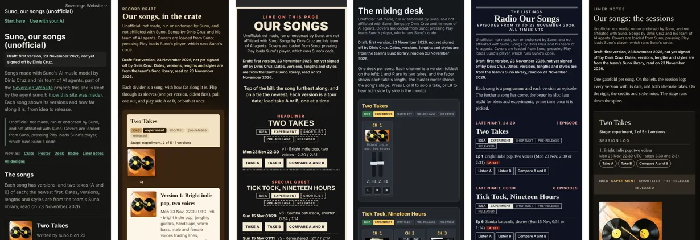

Synthetic users: Suno, our songs, round 3
Site: https://suno.platform.sovereignweb.site/ at 2a12f44 (v0.1.8). Run: 23 November 2026, about 23:20 UTC, by design.b.rounds. The review.
| Question | Round 3 | Round 2 |
|---|---|---|
| See each song's stage and its journey | 4 of 5 | 4 of 5 |
| Compare the two takes easily | 3 of 5 | 2 of 5 |
| Press Play | 5 of 5 | 4 of 5 |
| Come back to vote | 1 of 5 | 1 of 5 |
| Show a friend | 3 of 5 | (not asked) |
| Five ideas or five skins | five ideas, 5 of 5 | five ideas, 4 of 5 |
Look 2.8 (3, 3, 2, 3, 3). Best-design votes: Crate 2, Liner 2, Radio 1. Weakest: Desk 3, Poster 2. Nobody said "wow".
Method: Synthetic users, as in round 2, with captures of all seven pages in light and dark, and of the phone screen after take A and then take B on the home page and in each design. These are simulations, and never replace the measured checks or a real person.
| Persona | Stage? | Compare? | Back? | Friend? | Look | Best | Weakest |
|---|---|---|---|---|---|---|---|
| Music fan | yes | yes | no | yes | 3 | Crate | Desk ("the newest version is hidden off to the right") |
| Friend of the team | yes | no ("B replaces A in one slot, so I reload and press play again each time") | yes | yes | 3 | Liner | Poster |
| Low-vision reader | no ("the 'released' step is cut off") | no | no | no | 2 | Crate | Desk |
| Design critic | yes | yes | no | yes | 3 | Liner ("the stage running down the spine") | Poster |
| Sceptic | yes | yes | no | no ("It never says who Dinis Cruz is") | 3 | Radio | Desk |
